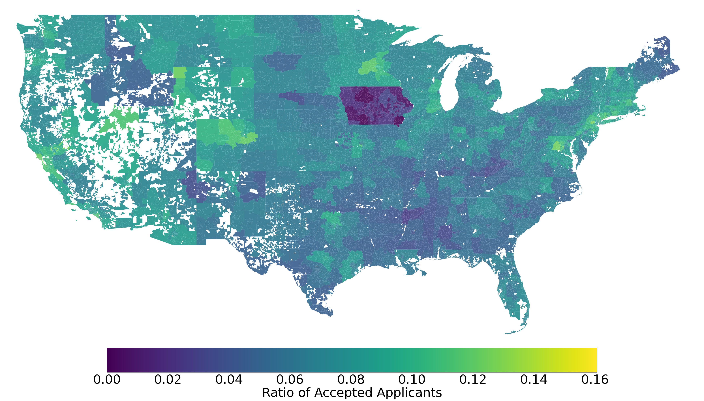
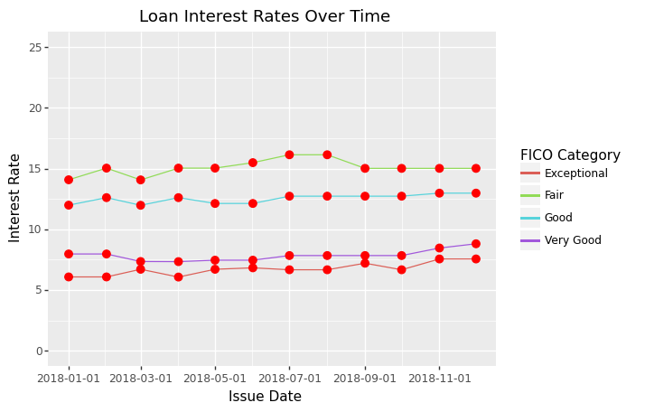
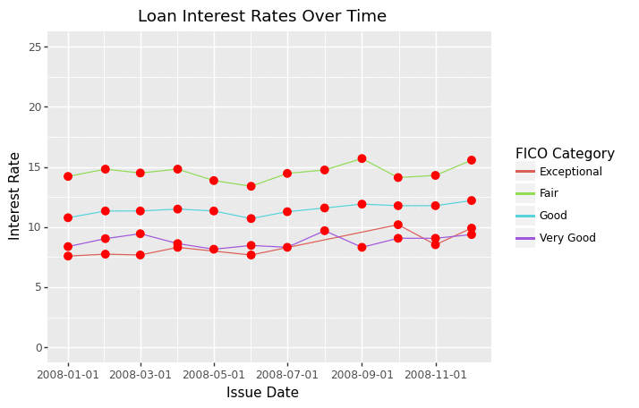
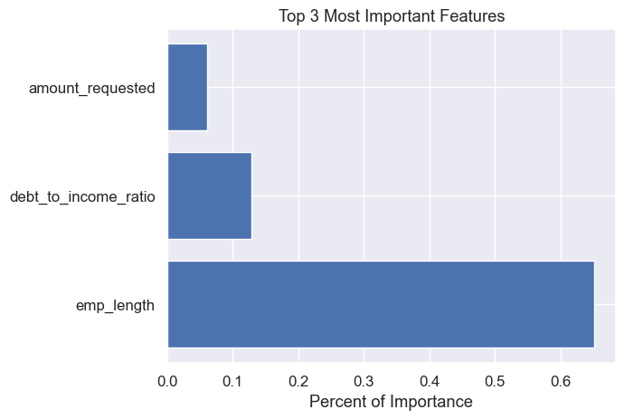

import pandas as pd
import numpy as np
import matplotlib.pyplot as plt
import plotly.io as pio
import plotly.express as px
import geopandas as gpd
import fiona
import matplotlib
import seaborn as sns
from sklearn.ensemble import VotingClassifier
from sklearn.metrics import classification_report, confusion_matrix
from sklearn.tree import DecisionTreeClassifier
from sklearn.linear_model import LogisticRegression
from sklearn.neighbors import KNeighborsClassifier as knn
import math as m
from sklearn.model_selection import train_test_split
from statsmodels.stats.outliers_influence import variance_inflation_factor
from sklearn import preprocessing
#from plotnine import ggplot, geom_point, aes, stat_smooth, facet_wrapCan You be Approved for a Loan?
Spring 2023
LendingClub Loan Applications

LendingClub is one of many financial service companies located in the United States. Their personal loan service has received millions of applications since 2007. Out of those millions, a fraction of those applications are accepted. As a college student transitioning from a dependent to an independent in the United States, there is little doubt in my mind that I will be applying for a loan in the near future. Since I will be applying for loans, I want to understand how to maximize my odds of approval. Fortunately, some financial service companies have released information about the people that have applied for loans. Through a Kaggle dataset George (2019), I was able to track loan applicants that applied for loans through LendingClub.
Note
You can find the link to my full code and documentation here: GitHub Repository
The data spans 11 years, from 2007 to 2018, and contains two tables: a rejected and an accepted loan applicant table. The accepted applicant table contains approximately 2 million rows and lists over 150 features. The rejected applicant table extends out to about 27 million rows, and has exactly 9 features. To understand all of the different features, a separate Kaggle resource was used that identifies the columns that appear in the dataset Chan (2018). Many variables are based on financial concepts or related to the applicant following their acceptance.
Goals and Introduction to Features
My goal for the analysis was to focus on features that were easily understandable and were characteristics of the customer. I wanted to describe loan applicants and build a model using some of the features. I defined seven different questions that tackled unique aspects of the data. The table of contents describes each question I address. Here is a list of some of the features I plan to use:
ZIP Code, FICO Score, Debt-to-Income Ratio, Employment Length, Reason for Loan, Homeowner Status, Hardship Status, and Interest Rate.
:::{.callout-note} The list of features above is not complete. :::
Imports for Project
Preprocessing the Data
Before answering the questions, the data needed to be shaped and organized. A mix of cleaning techniques were used to break the raw csv files into distinct tables: a ZIP Code table, a model table, and an accepted applicant table. The first step is to import the files as dataframes.
Important
Not every piece of processing code will be displayed. Visit the repository for the complete code.
Code
# Reading Data
accepted = pd.read_csv("../accepted_2007_to_2018Q4.csv")
rejected = pd.read_csv("../rejected_2007_to_2018Q4.csv")
# Adding Result Column
accepted['Applicant_Result'] = 1
rejected['Applicant_Result'] = 0
Note
The two files being imported from the Kaggle dataset are large in size and could not be uploaded to the Github repository.
ZIP Codes Table
Next, I start processing a csv for ZIP Codes. Both raw tables contain applicants’ first three digits of their ZIP Code. A new dataset will combine both ZIP Code columns and an applicant result column. A few missing values in the data will be dropped.
Code
rejected['Zip Code'].isnull().sum()/len(rejected)
accepted['zip_code'].isnull().sum()/len(accepted)
zip_df = rejected[['Zip Code', 'Applicant_Result']].rename(columns=
{"Zip Code": "zip_code", "Applicant_Result": "applicant_result"})
zip_df = pd.concat([zip_df, accepted[['zip_code', 'Applicant_Result']].rename(columns={"Applicant_Result": "applicant_result"})]
, axis=0)
zip_df.dropna(axis=0, inplace=True)
zip_df.reset_index(drop=True, inplace=True)
zip_df.head()Accepted Loans Table
The next table I will be making lists accepted loan applications. To clean the columns I defined how many missing values were in each feature. Then, I decided to remove columns that contained at least 30% missing values.
Code
col_to_be_dropped = []
for column in accepted.columns:
if (accepted[column].isnull().sum()/len(accepted)) > 0.3:
col_to_be_dropped.append(column)
trimmed_accepted = accepted.drop(col_to_be_dropped, axis = 1)
trimmed_accepted.shapeAfter looking over the columns, I selected variables that would be most related to the questions I planned to answer. Then, after selecting my features, I took the percentage of values I would have left if I decided to drop their NA rows. With a remaining 91%, I decided it would be acceptable to drop the missing values instead of attempting to replace them. Lastly, I changed the type of the FICO Score columns and the policy code to integers. The final table consisted of 17 features.
Code
columns_needed = ['loan_amnt', 'title', 'last_fico_range_low', 'last_fico_range_high',
'dti', 'zip_code', 'addr_state', 'emp_length', 'emp_title',
'funded_amnt', 'hardship_flag', 'home_ownership', 'loan_status',
'application_type', 'issue_d', 'policy_code', 'Applicant_Result']
# accepted_project_cut = accepted_project.dropna(axis=0)
# len(accepted_project_cut)/len(accepted_project) = 0.9168417229876927
accepted_project = trimmed_accepted[columns_needed]
accepted_project.dropna(axis=0, inplace=True)
accepted_project['last_fico_range_low'] = accepted_project['last_fico_range_low'].astype('int64')
accepted_project['last_fico_range_high'] = accepted_project['last_fico_range_high'].astype('int64')
accepted_project['policy_code'] = accepted_project['policy_code'].astype('int64')
accepted_project.reset_index(drop=True, inplace=True)Accepted and Rejected Loans Table
Lastly, I wanted to build a table that combined both accepted and rejected loan applications. To start, all columns from the rejected table were attempted to be matched to a column from the accepted table. The ‘Risk_Score’ column in the rejected applicant table was not considered because it contained too many missing values (~18 million). The remaining columns had a low percentage of missing values and those observations were dropped. Another edit that was made changed the debt-to-income ratio column to be a float type. To do this, I removed the percent sign and converted the data type.
Code
trimmed_rejected = rejected.drop(['Risk_Score'], axis=1)
trimmed_rejected['Debt-To-Income Ratio'] = trimmed_rejected['Debt-To-Income Ratio'].str.replace('%', '', regex=True)
trimmed_rejected['Debt-To-Income Ratio'] = trimmed_rejected['Debt-To-Income Ratio'].astype('float64')Next, I used the sample method to take 100,000 rows from each table and concatenated them to form a new table. Finally, all three tables were written as csv files.
Is employment length significant?
To analyze the employment length, a grouped bar chart comparing loan applicants was made. This was taken using the model data that randomly sampled both loan applications.
df = pd.read_csv("../model_only_data.csv")
question_one = df[['applicant_result', 'emp_length']]
x = np.arange(len(pd.unique(question_one['emp_length'])))
y1 = question_one['emp_length'][question_one['applicant_result'] == 1].value_counts().sort_index().values
y2 = question_one['emp_length'][question_one['applicant_result'] == 0].value_counts().sort_index().values
width = 0.2
temp = y1[0]
y1[0] = y1[10]
temp2 = y1[1]
y1[1] = temp
y1[10] = temp2
temp = y2[0]
y2[0] = y2[10]
temp2 = y2[1]
y2[1] = temp
y2[10] = temp2
plt.bar(x-0.2, y1, width, color='cyan')
plt.bar(x, y2, width, color='orange')
plt.xticks(x, ['< 1 year', '1 year', '2 years', '3 years', '4 years', '5 years', '6 years', '7 years', '8 years'
, '9 years', '10+ years'], rotation=90)
plt.xlabel("Self-Reported Employment Length")
plt.ylabel("Counts")
plt.title("Accepted Vs. Rejected Based on Employment Length")
plt.legend(["Accepted", "Rejected"])
plt.show()
In Figure 1 many of the rejected candidates reported that they have been at their job for less than a year. In contrast, a large portion of accepted applications listed an employment length of 10 plus years. Based on the visual, it appears that applicants with a year or more experience are favored.
Are specific loans given during certain months?
Utilizing natural language processing and some manual identification, I was able to group many of the different reasons applicants applied for loans. This was reflected in a rose chart that is labeled by month and takes all accepted applicant data from 2007-2018.
Natural Language Processing
Code
corpus = ""
i = 0
while i < len(df['reason_for_loan']):
corpus += " " + df['reason_for_loan'][i]
i += 1
stop_words = set(stopwords.words("english")) # creating a list of stop words in the english language
filtered_list = []
for word in words: # For every word
if word.casefold() not in stop_words: # Is the lowercase word in the stop words list?
filtered_list.append(word)
lemmatizer = WordNetLemmatizer()
lemma_corpus = []
no_match = []
for word, tag in nltk.pos_tag(filtered_list):
wntag = tag[0].lower()
wntag = wntag if wntag in ['a', 'r', 'n', 'v'] else None
if not wntag:
lemma = word # if it is not one of the above word types
no_match.append(lemma)
else:
lemma = lemmatizer.lemmatize(word, wntag) # using the tag to properly reduce the word
lemma_corpus.append(lemma)
no_match_series = pd.Series(no_match)
lemma_corpus_series = pd.Series(lemma_corpus)
# Looking at the top words
lemma_corpus_series.value_counts().index[0:100]
lemma_corpus_series.value_counts().index[100:150]
no_match_series.value_counts().index[0:50]
# Categories that the information was sorted into
home = ['home', 'house', 'kitchen', 'improvement', 'pool', 'remodel']
car = ['car', 'auto', 'motorcycle', 'vehicle', 'truck']
business = ['business']
medical = ['medical', 'remove']
debt_credit_issues = ['consolidation', 'credit', 'debt', 'refinancing', 'card', 'cc', 'consolidate', 'payoff',
'interest', 'rate']
moving = ['move', 'moving']
major_purchase = ['purchase', 'major']
vacation = ['vacation']
wedding = ['wedding', 'ring']
student = ['student', 'college', 'education', 'school']
# Code used to check the context of specific words
#l = []
#for thing in df['reason_for_loan']:
# if thing.find("refinancing") != -1:
# l.append(thing)
#print(pd.unique(l))Graphic
group_dates = pd.read_csv("../group_dates.csv")
fig = px.bar_polar(group_dates, r="count",theta='issue_month',
color="reduced_reason", labels={"reduced_reason": "Loan Types"})
fig.update_layout(legend=dict(
yanchor="top",
y=0.80,
xanchor="left",
x=1.1,
bgcolor="LightGray",
bordercolor="Black",
borderwidth=1),font=dict(
size=15))
fig.update_polars(radialaxis_nticks=11)
fig.update_polars(angularaxis_tickfont_size=15)
fig.update_polars(radialaxis_tickfont_size=15)
fig.update_polars(radialaxis_angle=70)
fig.update_polars(radialaxis_tickangle=90)
config = {
'toImageButtonOptions': {
'format': 'png', # one of png, svg, jpeg, webp
'filename': 'custom_image',
'height': 1680,
'width': 2380
}
}
fig.show(config=config)Looking at the rose chart Figure 2, we can observe a couple things. Firstly, three of the 12 months have a noticeable drop in overall accepted applicant counts. Why is there a drop? It is not entirely clear. Nothing jumps out as an explanation while doing some Googling. It might be a situation unique to LendingClub.
I can shed some light on whether the pattern is consistent for each year or different. By creating a gif, we can observe the yearly changes in counts by month.

Note
Note that the gif ranges from 2008 to 2018. It does not cover 2007 because LendingClub had small counts for that year and did not accept candidates in every month.
What is the rate of acceptance?
LendingClub has had over 4 million members with people signing up across the United States. So, what does the acceptance rate look like across the U.S.? Using census data, I made a choropleth graphic visualizing the acceptance rate across 48 of the states–sorry Alaska and Hawaii.
Note
Alaskan and Hawaiian citizens can apply for loans via LendingClub; but, they are not included because it stretches the choropleth.
df_map_2015 = gpd.read_file('../2015_map_data.shp')
matplotlib.rcParams['font.size'] = 50
fig, ax = plt.subplots(1, figsize=(50, 50))
df_map_2015.plot(column = df_map_2015['accepted_rejected_ratio'], cmap='viridis', legend=True,
legend_kwds={'label': "Ratio of Accepted Applicants", 'orientation': "horizontal", "pad": 0.01,
"shrink": .7}, ax=ax, alpha=.9)
ax.set_xlim(-126, -65)
ax.set_ylim(24, 50)
plt.axis('off')
plt.title
plt.show()
The interesting thing that stands out is the large, scary space outlining the state of Iowa. As of the dates collected from the Kaggle dataset, Iowa did not allow their citizens to apply for loans with LendingClub. This is the most likely explanation for the abysmal acceptance rate. Besides Iowa’s low rate, no other group of ZIP Codes stand out.
How does debt-to-income and FICO Score change based on hardship flag, home ownership, and application type?
Loan applicants that are approved for loans must have differences between each other–right? To take a further look, I describe applicants by their homeowner status, whether they filed jointly or not, and if they have had to reduce their payment plans in the past (hardhip flag). Those features will be ordered based on median FICO scores and debt-to-income (DTI) ratios.
df = pd.read_csv("../accepted_only_data.csv")
df_new = df[~df['home_ownership'].isin(['OTHER', 'ANY', 'NONE'])]
grouped_values = df_new.groupby(['home_ownership', 'application_type', 'hardship_flag'])['fico_range_low'].median()
grouped_values = pd.DataFrame(grouped_values)
grouped_values.reset_index(inplace=True)
sorted_df = grouped_values.sort_values(by='fico_range_low',ascending=False).head()
sorted_df.reset_index(inplace=True,drop=True)
sorted_df.rename(columns={"home_ownership": "Ownership", "application_type": "Application Type",
"hardship_flag": "Hardship Flag", "fico_range_low": "FICO Score"}, inplace=True)
sorted_df| Ownership | Application Type | Hardship Flag | FICO Score | |
|---|---|---|---|---|
| 0 | OWN | Joint App | Y | 720.0 |
| 1 | OWN | Joint App | N | 710.0 |
| 2 | MORTGAGE | Joint App | N | 705.0 |
| 3 | MORTGAGE | Joint App | Y | 700.0 |
| 4 | RENT | Joint App | N | 700.0 |
df = pd.read_csv("../accepted_only_data.csv")
df_new = df[~df['home_ownership'].isin(['OTHER', 'ANY', 'NONE'])]
grouped_values_dti = df_new.groupby(['home_ownership', 'application_type', 'hardship_flag'])['dti'].median()
grouped_values_dti = pd.DataFrame(grouped_values_dti)
grouped_values_dti.reset_index(inplace=True)
sorted_df = grouped_values_dti.sort_values(by='dti', ascending=True).head()
sorted_df.reset_index(inplace=True,drop=True)
sorted_df.rename(columns={"home_ownership": "Ownership", "application_type": "Application Type",
"hardship_flag": "Hardship Flag", "dti": "Debt-to-Income Ratio"}, inplace=True)
sorted_df| Ownership | Application Type | Hardship Flag | Debt-to-Income Ratio | |
|---|---|---|---|---|
| 0 | OWN | Joint App | Y | 11.90 |
| 1 | RENT | Individual | N | 17.30 |
| 2 | RENT | Individual | Y | 17.49 |
| 3 | MORTGAGE | Individual | N | 17.61 |
| 4 | OWN | Individual | Y | 17.70 |
For the top three FICO scores Figure 3, candidates either owned or mortgaged a home. All of the top three filed jointly. The top three lowest dti scores Figure 4 had applicants that rented or owned, filed either individually or jointly, and did or did not have a hardship flag. The group that owned a house, filed jointly, and enrolled in a hardship plan had the highest FICO Score and DTI.
Does FICO Score change the interest rate?
Let’s say you have been approved for a loan. Now, the problem is the interest rate. This will effect how much your monthly payments will be. Using the accepted loan applications, I can find the interest rates people received. Since FICO scores seem to be a widely used metric, I grouped applicants by their FICO score.
df = pd.read_csv("../accepted_only_data.csv")
fico_fair_df = df[(df['fico_range_low'] >= 580) & (df['fico_range_low'] <= 669)]
fico_good_df = df[(df['fico_range_low'] >= 670) & (df['fico_range_low'] <= 739)]
fico_very_good_df = df[(df['fico_range_low'] >= 740) & (df['fico_range_low'] <= 799)]
fico_exceptional_df = df[(df['fico_range_low'] >= 800) & (df['fico_range_low'] <= 850)]
fico_fair_df.reset_index(inplace=True)
fico_good_df.reset_index(inplace=True)
fico_very_good_df.reset_index(inplace=True)
fico_exceptional_df.reset_index(inplace=True)
fico_fair_df['fico_category'] = "Fair"
fico_good_df['fico_category'] = "Good"
fico_very_good_df['fico_category'] = "Very Good"
fico_exceptional_df['fico_category'] = "Exceptional"
new_df = pd.concat([fico_fair_df, fico_good_df, fico_very_good_df, fico_exceptional_df], axis=0)
new_df[['month', 'year']] = new_df['issue_d'].str.split("-", expand=True)
new_df['issue_d'] = pd.to_datetime(new_df['issue_d'])
data_two = new_df[new_df['year'] == "2018"]
grouped_two = data_two.groupby(['issue_d', 'fico_category'])['int_rate'].median()
(ggplot(grouped_two.reset_index(), aes(x='issue_d', y='int_rate', color='fico_category')) + geom_line() + geom_point(color="red", size=3) + ylim(0,25) + xlab("Issue Date") + ylab("Interest Rate") + labs(color="FICO Category", title="Loan Interest Rates Over Time"))
Based on the data from 2018, it appears that a better FICO Score will result in a better interest rate. This is reinforced when looking at the interest rates from 2008 to 2018.

It seems like I will need to build my FICO Score to get best interest rates.
Is there a bound using DTI?
How does your debt status play a role? DTI or debt-to-income is designed to compare income versus debt. If you have a high ratio, it might be reasonable to assume that you are more unlikely to receive a loan. Let’s take a look:
model_df = pd.read_csv("../model_only_data.csv")
graph_df = model_df[['debt_to_income_ratio', 'applicant_result']][model_df['debt_to_income_ratio'] <= 100]
fig, ax = plt.subplots()
counts, edges, bars = ax.hist([graph_df['debt_to_income_ratio'][graph_df['applicant_result'] == 0],
graph_df['debt_to_income_ratio'][graph_df['applicant_result'] == 1]], histtype='barstacked',
label=['Rejected', 'Accepted'])
ax.legend(prop={'size': 10})
ax.set_title('Accepted and Rejected Debt-To-Income-Ratio')
plt.xticks([0,10,20,30,40,50,60,70,80,90,100])
plt.yticks([0,10000,20000,30000,40000,50000,60000,70000])
ax.bar_label(bars[1], padding=10, color='black', fontsize=12)
plt.show()For DTI ranging to about 40%, the distribution between accepted and rejected applications is fairly split Figure 5. Beyond 40% DTI, the proportions of accepted applications decreases. Although, there are accepted candidates with DTI ratios spanning from 0-100%.
Can the data effectively predict whether a candidate will be accepted or rejected?
Three classification models, k-Nearest Neighbors, Decision Tree, and Logistic Regression can all predict an application’s outcome. I can combine all three models together into an ensemble model where the three models will vote on an application’s result.
Note
Based on research, I am using the square root of the training data’s length for k.

Fitting Models
knn_new = knn(n_neighbors=m.ceil((len(pred_std_train))**(1/2)))
algorithm_knn = knn_new.fit(pred_std_train, tar_std_train)
clf = LogisticRegression(random_state=42).fit(pred_std_train, tar_std_train)
tree_clf = DecisionTreeClassifier(random_state=42)
algorithm_tree = tree_clf.fit(pred_std_train, tar_std_train)
voting_clf_best_of_all = VotingClassifier(estimators=[('knn', algorithm_knn), ('lr', clf), ('dt', algorithm_tree)],
voting='soft')
algorithm_ens = voting_clf_best_of_all.fit(pred_std_train, tar_std_train)
ensemble_hard = algorithm_ens.predict(pred_std_test)Model Equations
To test the model’s effectiveness, three metrics will be used. Precision, recall, and accuracy. Precision measures the accuracy of positive predictions, and recall measures the accuracy of relevant results correctly classified. Accuracy is all correctly identified over the total.
\[Precision = TP/(TP+FP)\]
\[Recall = TP/(TP+FN)\]
\[Accuracy = (TP+TN)/(TP+FP+TN+FN)\]
Confusion Matrix and Results
labels = ['True Neg','False Pos','False Neg','True Pos']
categories = ['Rejected', 'Accepted']
cm_ens = confusion_matrix(tar_std_test, ensemble_hard)
group_counts = ['{0:0.0f}'.format(value) for value in
cm_ens.flatten()]
labels = [f'{v1}\n{v2}' for v1, v2 in
zip(labels,group_counts)]
labels = np.asarray(labels).reshape(2,2)
disp_ens = ConfusionMatrixDisplay(confusion_matrix=cm_ens)
plt.figure(figsize=(8,6), dpi=100)
# Scale up the size of all text
sns.set(font_scale = 1.1)
ax = sns.heatmap(cm_ens, annot=labels, fmt='', cmap='Oranges')
# set x-axis label and ticks.
ax.set_xlabel("Predicted", fontsize=14, labelpad=20)
ax.xaxis.set_ticklabels(['Rejected', 'Accepted'])
# set y-axis label and ticks
ax.set_ylabel("Actual", fontsize=14, labelpad=20)
ax.yaxis.set_ticklabels(['Rejected', 'Accepted'])
ax.set_title("Confusion Matrix for Loan Applications", fontsize=20, pad=20)
plt.show()
Results in Percent \[Precision = 91.34 \] \[Recall = 90.02 \] \[Accuracy = 90.62 \]

Overall, the results of the model were promising! Using the feature importance from the decision tree model, we can observe that employment length played a large role. Precision, recall, and accuracy all measured in the 90s. One of my fears was that ZIP Code would play a role in deciding applications. However, it appears that financial factors take more precedence.
Conclusions
Understanding what qualities lenders look at is important. For LendingClub, many accepted applications contain people with employment length greater than 1 year. Accepted applications also contained low DTI percentages and high FICO Scores. Building a model using matching features resulted in high metric scores and reflected an importance of financial factors. As someone that will be applying for loans, it is nice to understand what measures lenders are looking for.
References
Chan, Jonathan. 2018. “Lending Club Data Dictionary.” Kaggle. 2018. https://www.kaggle.com/datasets/jonchan2003/lending-club-data-dictionary?select=Lending+Club+Data+Dictionary+Approved.csv.
George, Nathan. 2019. “All Lending Club Loan Data.” Kaggle. 2019. https://www.kaggle.com/datasets/wordsforthewise/lending-club?select=accepted_2007_to_2018Q4.csv.gz.